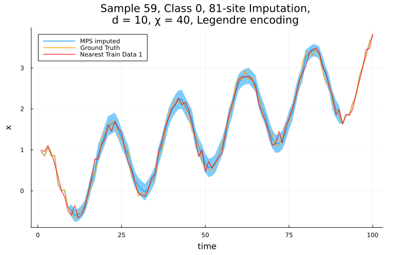

Imputation
Setup
The first step is to train an MPS (see Tutorial). Here, we'll train an unsupervised MPS (no class labels) using the the noisy trendy sine from the tutorial.
# Fix rng seed
using Random
rng = Xoshiro(1)
# dataset size
ntimepoints = 100
ntrain_instances = 300
ntest_instances = 200
# generate the train and test datasets
X_train = trendy_sine(ntimepoints, ntrain_instances, 0.1, rng);
X_test = trendy_sine(ntimepoints, ntest_instances , 0.1, rng);
# hyper parameters and training
opts = MPSOptions(d=10, chi_max=40, sigmoid_transform=false);
mps, info, test_states= fitMPS(X_train, opts);Next, we initialise an imputation problem. This does a lot of necessary precomputation
julia> imp = init_imputation_problem(mps, X_test);
imp = init_imputation_problem(mps, X_test);
++++++++++++++++++++++++++++++++++++++++++++++++++++++++++++
Summary:
- Dataset has 300 training samples and 200 testing samples.
Slicing MPS into individual states...
- 1 class(es) were detected.
- Time independent encoding - Legendre - detected.
- d = 10, chi_max = 40
Re-encoding the training data to get the encoding arguments...
Created 1 ImputationProblem struct(s) containing class-wise mps and test samples.For multiclass data, you can pass in y_test to exploit the labels / class information while doing imputation.
Imputation with the median
Now decide what you want to impute. The necessary options are:
class::Integer: The class of the timeseries instance we are going to impute, leave as zero for "unlabelled" dataimpute_sites: The sites that are missing (inclusive). In this example we'll consider 81% of the data to be missing valuesinstance_idx: The instance from the chosen class in the test set.method: The method to use trajectories, or median, mode, mean etc...
class = 0
impute_sites = collect(10:90)
instance_idx = 59
method = :median
imputed_ts, pred_err, target_ts, stats, plots = MPS_impute(
imp,
class,
instance_idx,
impute_sites,
method;
NN_baseline=true, # whether to also do a baseline imputation using 1-NN
plot_fits=true, # whether to plot the fits
)julia> using PrettyTables, Plots
julia> pretty_table(stats[1]; header=["Metric", "Value"], header_crayon= crayon"yellow bold", tf = tf_unicode_rounded);
╭────────┬───────────╮
│ Metric │ Value │
├────────┼───────────┤
│ MAE │ 0.0817192 │
│ NN_MAE │ 0.127104 │
╰────────┴───────────╯
plot(plots...)
There are a lot of other options, and many more impution methods to choose from! SeeMPS_impute for more details.
Plotting Trajectories
To plot trajectories, use method=:ITS. Here, we'll plot 10 randomly selected trajectories by setting the num_trajectories keyword.
class = 0
impute_sites = collect(10:90)
instance_idx = 59
method = :ITS
imputed_ts, pred_err, target_ts, stats, plots = MPS_impute(
imp,
class,
instance_idx,
impute_sites,
method;
NN_baseline=false, # whether to also do a baseline imputation using 1-NN
plot_fits=true, # whether to plot the fits
num_trajectories=10, # number of trajectories to plot
rejection_threshold=2.5 # limits how unlikely we allow the random trajectories to be.
# there are more options! see [`MPS_impute`](@ref)
)
plot(plots...)
Plotting cumulative distribution functions
It can be interesting to inspect the probability distribution being sampled from at each missing time point. To enable this, we provide the get_cdfs function, which works very similarlary to MPS_impute, only it returns the CDF at each missing time point.
cdfs, ts, pred_err, target = get_cdfs(
imp,
class,
instance_idx,
impute_sites
);
xvals = imp.x_guess_range.xvals[1:10:end]
plot(xvals, cdfs[1][1:10:end]; legend=:none)
p = last([plot!(xvals, cdfs[i][1:10:end]) for i in eachindex(cdfs)])
ylabel!("cdf(x)")
xlabel!("x_t")
title!("CDF at each time point.")
Docstrings
MPSTime.init_imputation_problem — Methodinit_imputation_problem(W::TrainedMPS, X_test::AbstractMatrix, y_test::AbstractArray=zeros(Int, size(X_test,1)); <keyword arguments>) -> imp::ImputationProblemInitialise an imputation problem using a trained MPS and relevent test data.
This involves a lot of pre-computation, which can be quite time intensive for data-driven bases. For unclassed/unsupervised data y_test may be omitted.
Keyword Arguments
guess_range::Union{Nothing, Tuple{<:Real,<:Real}}=nothing: The range of values that guesses are allowed to take. This range is applied to normalised, encoding-adjusted time-series data. To allow any guess, leave as nothing, or set to encoding.range (e.g. [(-1., 1.) for the legendre encoding]).dx::Float64 = 1e-4: The spacing between possible guesses in normalised, encoding-adjusted units. When imputing missing data with an MPS method, the imputed values will be selected from range(guess_range...; step=dx)verbosity::Integer=1: The verbosity of the initialisation process. Useful for debugging, or to completely suppress output.
MPSTime.MPS_impute — FunctionMPS_impute(imp::ImputationProblem,
class::Any,
instance::Integer,
missing_sites::AbstractVector{<:Integer},
method::Symbol=:median;
<keyword arguments>) -> (imputed_instance::Vector, errors::Vector, target::Vector, stats::Dict, p::Vector{Plots.Plot})Impute the missing_sites using an MPS-based approach, selecting the trajectory from the conditioned distribution with method
See init_imputation_problem for constructing an ImputationProbleminstance out of a trained MPS. Theinstance` number is relative to the class, so class 1, instance 2 would be distinct from class 2, instance 2.
Imputation Methods
:median: For each missing value, compute the probability density function of the possible outcomes from the MPS, and choose the median. This method is the most robust to outliers. Keywords:get_wmad::Bool=true: Whether to return an 'error' vector that computes the Weighted Median Absolute Deviation (WMAD) of each imputed value.
:mean: For each missing value, compute the probability density function of the possible outcomes from the MPS, and choose the expected value. Keywords:get_std::Bool=true: Whether to return an 'error' vector that computes standard deviation of each imputed value.
:mode: For each missing value, choose the most likely outcome predicted by the MPS. Keywords:max_jump::Union{Number,Nothing}=nothing: The largest jump allowed between two adjacent imputations. Leave asnothingto allow any jump. Helpful to suppress 'spikes' caused by poor support near the encoding domain edges.
:ITS: For each missing value, choose a value at random with probability weighted by the probability density function of the possible outcomes. Keywords:rseed::Integer=1: Random seed for producing the trajectories.- `num_trajectories::Integer=1: Number of trajectories to compute.
rejection_threshold::Union{Float64, Symbol}=:none: Number of WMADs allowed between adjacent points. Setting this low helps suppress rapidly varying trajectories that occur by bad luck.max_trials::Integer=10: Number of attempts allowed to make guesses conform to rejection_threshold before giving up.
:kNearestNeighbour: Select theknearest neighbours in the training set using Euclidean distance to the known data. Keyword:k: Number of nearest neighbours to return. SeekNN_impute
Keyword Arguments
impute_order::Symbol=:forwards: Whether to impute the missing values:forwards(left to right) or:backwards(right to left)NN_baseline::Bool=true: Whether to also impute the missing data with a k-Nearest Neighbour baseline.n_baselines::Integer=1: How many nearest neighbour baselines to compute.plot_fits::Bool=true: Whether to make a plot showing the target timeseries, the missing values, and the imputed region. If false, then p will be an empty vector. The plot will show the NN_baseline (if it was computed), as well as every trajectory if using the :ITS method.get_metrics::Bool=true: Whether to compute imputation metrics, if false, thenstats, will be empty.full_metrics::Bool=false: Whether to compute every metric (MAPE, SMAPE, MAE, MSE, RMSE) or just MAEprint_metric_table::Bool=false: Whether to print thestatsas a table.invert_transform::Bool=true:, # Whether to undo the sigmoid transform/minmax normalisation before returning the imputed points. If this is false, imputed_instance, errors, target timeseries, stats, and plot y-axis will all be scaled by the data preprocessing / normalisation and fit to the encoding domain.kwargs...: Extra keywords passed to the imputation method. See the Imputation Methods section.
MPSTime.get_cdfs — Functionget_cdfs(imp::ImputationProblem,
class::Any,
instance::Integer,
missing_sites::AbstractVector{<:Integer},
method::Symbol=:median;
<keyword arguments>) -> (cdfs::Vector{Vector}, ts::Vector, pred_err::Vector, target_timeseries_full::Vector)Impute the missing_sites using an MPS-based approach, selecting the trajectory from the conditioned distribution with method, and returns the cumulative distribution function used to infer each missing value.
See MPS_impute for a list of imputation methods and keyword arguments (does not support plotting, stats, or kNN baselines). See init_imputation_problem for constructing an ImputationProblem instance. The instance number is relative to the class, so class 1, instance 2 would be distinct from class 2, instance 2.
Internal imputation methods:
Internal imputation methods
MPSTime.impute_median — Functionimpute missing data points using the median of the conditional distribution (single site rdm ρ).
Arguments
class_mps::MPS:opts::Options: MPS parameters.enc_args::AbstractVectorx_guess_range::EncodedDataRangetimeseries::AbstractVector{<:Number}: The input time series data that will be imputed.timeseries_enc::MPS: The encoded version of the time series represented as a product state.imputation_sites::Vector{Int}: Indices in the time series where imputation is to be performed.get_wmad::Bool: Whether to compute the weighted median absolute deviation (WMAD) during imputation (default isfalse).
Returns
A tuple containing:
median_values::Vector{Float64}: The imputed median values at the specified imputation sites.wmad_value::Union{Nothing, Float64}: The weighted median absolute deviation ifget_wmadis true; otherwise,nothing.
MPSTime.impute_ITS — FunctionImpute a SINGLE trajectory using inverse transform sampling (ITS).
MPSTime.kNN_impute — FunctionkNN_impute(imp::ImputationProblem,
class::Any, instance::Integer,
missing_sites::AbstractVector{<:Integer};
k::Integer=1) -> [neighbour1::Vector, neighbour2::Vector, ...]Impute missing_sites using the k nearest neighbours in the test set, based on Euclidean distance.
See init_imputation_problem for constructing an ImputationProblem instance. The instance number is relative to the class, so class 1, instance 2 would be distinct from class 2, instance 2.